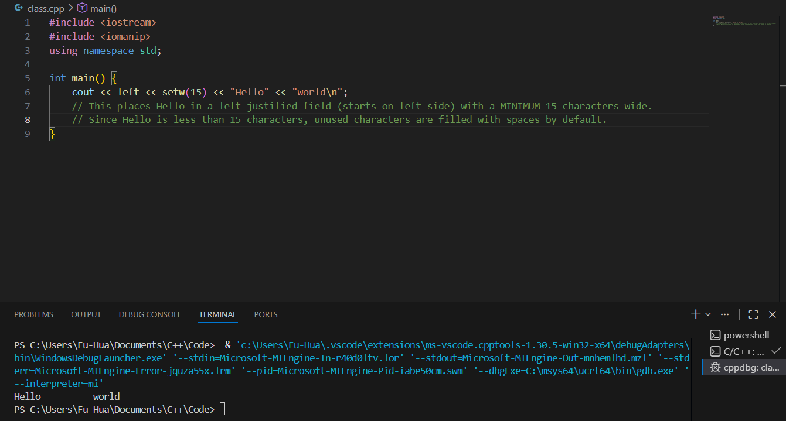
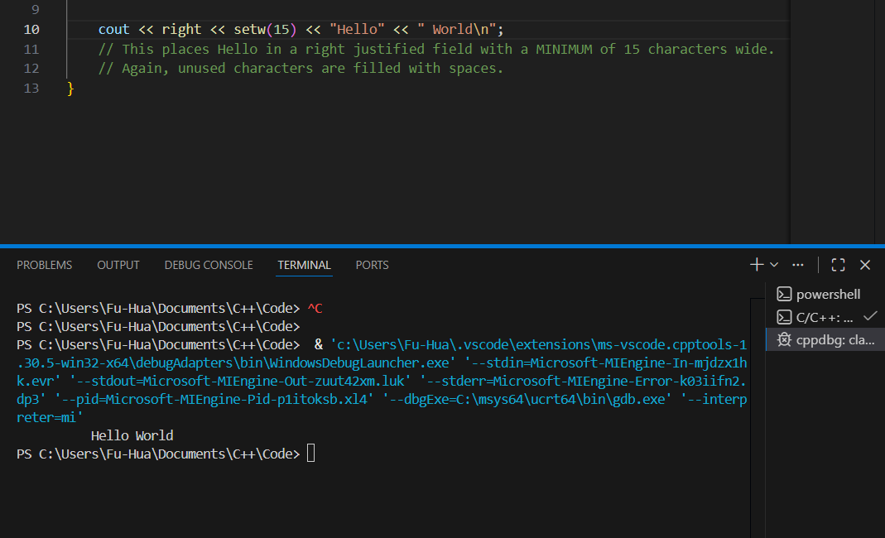

Input/Output
- #include <iostream> for cin, cout
- #include <iomanip> for manipulators (setw, setprecision, etc.)
- #include <limits> for numeric_limits (used with cin.ignore)
Reading Input(cin)
int x;
cin >> x;
- >> is extraction operator
- Takes two operands:
- left operand: an input stream expression (cin, ifstream object)
- right operand: variable to store input
- Automatically skips leading whitespace
- Stops reading at whitespace for strings.
cin.clear()
It clears the error state flags of cin.
- If user enters the wrong type (ex. letters for an int), cin fails
- When cin fails:
- It enters a failed state
- It stops accepting more input
- cin.clear() resets the error state (makes cin usable again)
- cin.ignore(removes the bad leftover input from the buffer)
- if (cin >> x) checks if input was succesful (false if it failed)
- cin >> x returns the stream itself.
Example:
- If invalid input is entered...
- cin enters a fail state
- further operations stop working
- cin.clear() does NOT remove bad input from the buffer. It only resets the stream state.
Output (cout)
cout << "hello" << endl;
- << is the insertion operator
- The left operand is an output stream expression (like cout or an ofstream object)
- The right operand is an expression of a simple type, string, or manipulator
- endl prints newline AND flushes buffer
- '\n' prints newline only(faster)
Printf() C-style Output
C-style Output
- Uses printf() function
- requires #include <cstdio> or <stdio.h>
- Uses format specifiers like %d, %f, %s
- not type-safe (compiler doesn't strictly check format vs variable type)
- procedural style
C++ Output
- Uses cout object
- Requires #include <iostream>
- uses the << insertion operator
- type-safe (compiler checks data types automatically)
- object-oriented / stream-based style
General printf Format Specifier: %[flags][width][.precision][length]specifier
| Specifier |
Type |
Example Format |
Example Output (value = 12.3456 or 42) |
Description |
| %d |
Integer (int) |
printf("%d", 42); |
42 |
Prints a signed decimal integer |
| %f |
Floating point (double/float) |
printf("%f", 12.3456); |
12.345600 |
Default: 6 decimal places |
| %.2f |
Floating point |
printf("%.2f", 12.3456); |
12.35 |
Sets precision to 2 decimal places |
| %10d |
Integer |
printf("%10d", 42); |
________42 |
Field width of 10 (right-justified by default) |
| %-10d |
Integer |
printf("%-10d", 42); |
42________ |
Left-justified in field width of 10 |
| %10.2f |
Floating point |
printf("%10.2f", 12.3456); |
_____12.35 |
Field width 10, precision 2, right-justified |
| %s |
String |
printf("%s", "Hello"); |
Hello |
Prints a string |
| %c |
Character |
printf("%c", 'A'); |
A |
Prints a single character |
Manipulators
- Manipulators are used only in input and output statements to control format
- Manipulators are found in both iostream and iomanip
- Examples:
- Allow for a "field width" to align text
- Change how values are displayed
Manipulators in iostream
endl: terminate the output line ("\n equiv.")
fixed: display in decimal point format with 6 decimal places as defult.
showpoint: display a whole number in decimal format with 6 significant digits as default.
Manipulators in iomanip
setw(n): fieldwidth specification manipulator
Sets the width of the next value (int, float, String) to be printed over 'n' characters with right justification as default.
This manipulator is the ONLY one that is NOT persistent. This means that it only affects the very next item displayed.
Useful to create/align columns in output.
setprecision(n): decimal number specification manipulator
Sets ALL subsequent floating-point outputs to be displayed with the 'n' decimal places of accuracy provided that fixed manipulator has already been specified.
Default is usually 6 decimal places.
scientific: set ALL subsequent floating point output to be displayed in scientific notaion. This is the default.
hex: set ALL subsequent outputs to be displayed in decimal notion (base 10). Mainly used if you had preciously set output to scientific or hex, and need to change back.
setfill(''): fills the unused field width with the specified character. By default, this is a space. Useful for adding leading zeros.
left: set ALL subsequent outputs to left-justification within the printing field.
right: set ALL subsequent outputs to right-justification within the printing field. This is the default, like Java's .format().
setw() Quirks

